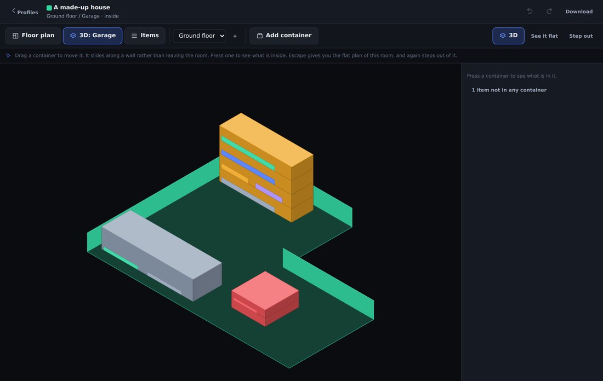
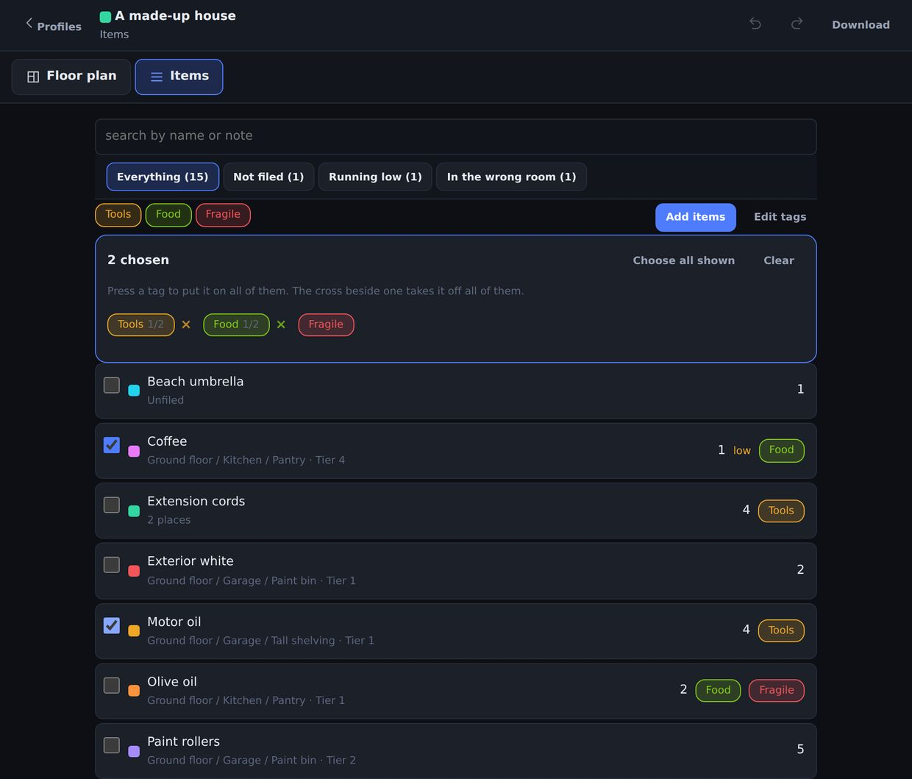
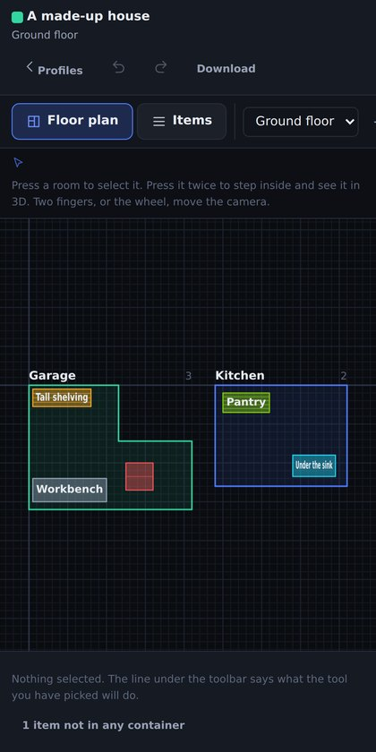

Featured · Desktop app and browser app
Invenfloor
Most inventory software gives you a list and expects you to remember the rest. This one asks where things are. You draw the floor plan, put containers in the rooms, and file items onto their shelves, so "where are the spare filters" has an answer you can point at.
It runs two ways from one data model: a Windows desktop app, and a browser version that needs no account and no server. Nothing you put into the browser one leaves your device.
Draw the room, then fill it
Containers snap inside a room and cannot be dragged through a wall. Shelves divide into tiers, and every item knows which tier it is on.
- Python
- PySide6 / Qt 6
- JavaScript, no framework
- Canvas 2D
- IndexedDB
- Web Crypto
- JSON + schema migration
- PyInstaller

The parts that were actually hard
Which walls to draw. Only the ones facing away from you. Testing that against the room's center works for a rectangle and is exactly backwards for the notch in an L, so each wall gets an outward normal worked out from the polygon's winding direction.
What order to draw them in. Giving everything one depth number and sorting is the obvious answer and it is wrong, because "behind" is a relation between two things rather than a property of one. A wall runs the length of a room, so it is nearer than some of what shares the room with it and further than the rest. The draw order is a topological sort of "A ends before B starts".
Halving the height presets broke every old save. A stored 60 meant medium before and tall after, and no default can tell those apart, so save files carry a version and get migrated on load.
A save file from a newer version. It loads, quietly drops the fields it does not know, and the next save writes that back over the original. Silent, permanent, and only on whichever machine is one update behind. Files from the future are refused now rather than opened.

Where is it, and what is out of place
A tag on an item says what the thing is. The same tag on a room says what belongs there. Compare the two and the app answers a question a list cannot: which things are somewhere they should not be.
Two programs, one answer. The Python and the JavaScript are separate implementations of the same model, so they get handed the same 6,358 questions and have to give the same answers. That harness has caught a real divergence: a float tie-break at the exact center of a circular room, where the two languages picked different nearest edges.
Nothing leaves the browser. Profiles live in IndexedDB on the machine that made them, optionally behind a passphrase: PBKDF2 at 600,000 iterations, AES-GCM, a recovery code, and no password reset, because there is nobody to ask.

It had to work on a phone
A stock count happens standing in the room, not at a desk. The browser version is the same code on a phone, a tablet and a laptop, with the tools sized for a thumb and the camera on two fingers.
Roblox · Luau
Games that run on economies
Two I am willing to put my name on. Both are economies first: what a player earns, what it costs them, and whether the numbers still hold up an hour in.
Also on GitHub